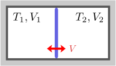
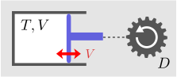
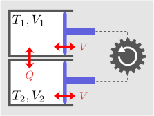

3.可逆な操作
可逆操作＝「断熱容器の準静変形」と「共等温変形」。
不可逆性を表す量があれば、平衡状態が分かるはず

前章の問題を変更し、熱を通さない仕切りにした場合を考える。即ち、右図のように、熱を通さない仕切りを固定した状態で、それぞれの部屋の温度・体積を
未知数は、終状態における各部屋の温度・体積の4つである：
エネルギー保存則以外に、何か一般的に成り立つ法則が必要である。そこで、可逆性・不可逆性に着目する。上述の仕切りが動く過程は自発的に起きるものだが、その逆の過程は自発的には決して起きない。即ち、仕切りが止まる位置は、初期状態に対して「最も不可逆な状態」となる位置と考えられる（体積の和やエネルギー保存則などの制約条件の下で）。要するに、不可逆性を表す量（エントロピーと呼ぶ）を見つければ、「その量が制約条件下で最大になるような平衡状態」として、求める平衡状態が決まるということである。（第5章で述べるが、変化の仕方に依存するので、実際には一意的には決まらない。しかし、少なくとも圧力が等しいという条件は導出できなければならない。）
とはいえ、いきなりエントロピーを定量する方法はわからない。この章では、手始めとして、可逆な操作について考える。可逆な操作では、エントロピーが一定になるので、等エントロピー面（等高線のようなもの）が決まることになる。まず、容器の数が1つだけの場合の可逆操作を与え（3.1節）、その後、2つの容器がある場合の可逆操作を与える（3.2節）。そうすれば後は、異なる等エントロピー面に異なる値をうまく割り振っていけば、エントロピーが決まることになる（地図上の高さ分布を知りたければ、等高線をたくさん書いて、各等高線の高さを求めればよいということである）。実際のエントロピーの定量は、第4章で行い、それを用いた上述の問題の解答は、第5章で行う。
3.11個の断熱容器の可逆操作：式(
この節では、断熱容器が1つだけある場合の可逆操作について述べる。なお、準静変形といった時、変形時の摩擦は無視している。
準静変形サイクルは温度を変えない：式(

1つの断熱容器の中に気体を入れておく。この容器は変形可能であるとし、変形は模式的にピストンで表すことにする（右図）。この断熱容器を変形させた時、その操作が可逆になるのはどういう時だろうか。まず、以下の実験事実に着目する：
断 熱 容 器 で は 、 変 形 サ イ ク ル で 温 度 を 下 げ る こ と は で き な い
従って、温度が変化しないようなサイクルを見つければ、可逆操作の特定につながりそうである。前章の2.2節で述べたことを思い出すと、断熱変形は、速く行ったほうが内部エネルギーが大きくなる、即ち、（ゆっくりの場合よりも）温度が高くなることになる。ピストンを引く場合、素早く引くと、気体の分子を置き去りにするので圧力がより小さくなり、温度は下がりにくくなる。一方、ピストンを押す場合、素早く動かすと、気体がピストンの周辺に寄せ集まった状態になるので、圧力がより大きくなり、温度はより上昇する。よっていずれの場合も、速く動かしたほうが、温度が高くなる。よって、温度の上昇幅が最も小さいサイクルは、準静変形のみによって構成されたサイクルということになる。
では、この時、温度の上昇幅は0になるだろうか。実際そうなる。断熱容器の準静変形によって、体積が微小量
以上により、準静変形を用いればよいことが分かる：
準 静 変 形 の み に よ る サ イ ク ル で は 、 断 熱 容 器 の 温 度 は 変 化 し な い 。
【3.1-注1】等エントロピー曲線
断熱容器を微小量
導出
準静変形は可逆である：式(
式(断 熱 容 器 の 準 静 変 形 は 、 可 逆 で あ る 。

まず、右図のような孤立系[1]を考える。これは、断熱容器（同図左）と、変形を起こすための力学的な装置
[1] 孤立系とは、外部とのエネルギーのやり取りがない系のことである。ただし、静的な重力場や電磁場はあってもよい。その場合は、系のエネルギーにそれらによるポテンシャルエネルギーを加えることになる。
[2] 弾み車（フライホイール）とは、重い円盤を回転させたものである（摩擦はないとする）。その運動エネルギーを使って様々な操作を行うことができる。弾み車とピストンをつないだり切ったりすることで、ピストンを操作できるわけである。この際、ピストン側から、エネルギーを受け取ることもできる。
この孤立系内で、何らかの操作を行った後、容器と弾み車の両方の状態を元に戻せれば、その操作は可逆である。エネルギーに着目すると、容器側の状態が元に戻れば、
以上により、ピストンの先には弾み車のような理想的な力学装置が存在しているのだと約束すれば、可逆性の判定をするには、断熱容器の状態が元に戻るかどうだけを考えれば十分である。そう考えれば、式(
3.22容器系の可逆操作：非等温時→式(
さて、冒頭の問題は、2個の容器がある場合に対応する。従って、2個の容器がある場合の可逆操作を考える必要がある。容器が2個になった場合でも、前節の結果はそれぞれの容器に対して成り立つ、即ち、各々の断熱容器を準静変形する過程は可逆である。この節では、これらに加えて、共等温変形(
共等温変形も可逆：式(

右図のように、2個の容器と弾み車からなる孤立系を考える。容器同士が接触している時には互いに熱を交換でき、離れている時は断熱容器として振る舞うとする。この場合の可逆操作を集めたい。
まず、前節の結果がそのまま成り立つ。即ち、容器同士がが離れている時に、各々の容器に対する準静変形は可逆である。この時の温度の変化を決定する関係式は、式(
可逆操作はほかにもあるだろうか。それは実際に存在し、以下が知られている：
共 等 温 変 形 は 、 可 逆 で あ る
共等温変形による微小変化を、式(
等温時の可逆操作をまとめて表す→式(
上述のように、2つの容器の温度が一致している場合の可逆操作は、共等温変形(
2つの容器がある場合、熱力学自由度は4（
式(
ところで、容器同士の温度が等しくない場合、可逆操作は、相変わらず式(式 と 式 は 、 等 エ ン ト ロ ピ ー 面 を 定 め る の に 十 分 で あ る

これが正しいことを見ておこう。まず、4つの自由度